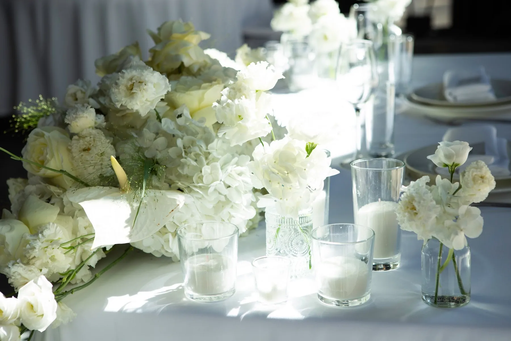
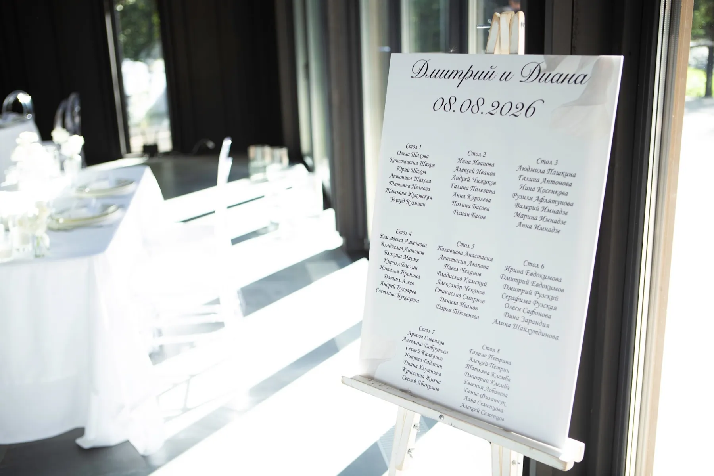

Минимализм на свадьбе — это не «ничего не делать», а выбрать несколько точных элементов и довести их до идеала. В таком оформлении нет случайных предметов, зато каждая деталь на виду. Рассказываем, из чего он складывается и где чаще всего ошибаются.
Принцип: одна идея и воздух
В минималистичном оформлении у свадьбы одна главная мысль — например, «белые цветы и свечи» или «ткань и свет». Всё остальное её поддерживает или убирается. Между элементами остаётся пространство: композиции не толпятся на столах, на стенах нет лишних надписей и украшений. Пространство тоже часть оформления.
Палитра и материалы
- Один-два цвета. Обычно белый, молочный, графит или одна нейтральная база с единственным акцентом.
- Три-четыре материала. Цветы, свечи, стекло, ткань — и всё. Не нужно добавлять ещё и мох, и ленты, и фонарики.
- Один-два вида цветов. Например, белые розы и эустома. Простота формы делает цветок заметнее.
Подробнее о работе с одним цветом — в статье про свадьбу в белом цвете, а о выборе палитры — в статье про цвет свадьбы.

Пространство, свет и детали
Минималистичный декор лучше всего работает в зале с хорошей архитектурой: панорамные окна, высокие потолки, красивые материалы. Тогда площадка — главный «декор», а флористика и свет подчёркивают её. Прозрачные стулья, лаконичные номера столов, план рассадки в той же стилистике — детали тоже должны быть чистыми. Вечером свет делает работу: свечи, мягкая подсветка и тёмный фон превращают несколько элементов в картину. Подробнее о зале — в статье про оформление зала.


Что чаще всего идёт не так
- Минимализм путают с экономией. Чистая форма требует точных материалов и аккуратного монтажа: складки ткани, высота композиций, ровные линии видны сразу.
- Добавляют «чуть-чуть» от других стилей. Ещё одна ленточка или гирлянда ломает идею.
- Забывают про свет. В минимализме он главный: без света лаконичный декор выглядит пустым.
Ближайший пример у нас — свадьба «Белые цветы в тёмном зале»: контраст тёмного пространства, белых цветов и свечей. А более мягкую версию вы увидите в «Белом шатре и зелёных яблоках».
Как заказать
Расскажите о площадке — оценим, что в ней можно оставить без украшений, предложим несколько точных элементов и посчитаем смету.
Частые вопросы
Минималистичная свадьба — это дешевле?
Не обязательно. Меньше элементов не значит дешевле: форма и материалы должны быть точными. Считаем смету под вашу площадку и идею.
Какая площадка подходит для минимализма?
Светлый или контрастный зал с хорошей архитектурой, панорамными окнами, высокими потолками. Если зал перегружен, минимализм потребует больше работы.
Какие цветы выбрать для минималистичной свадьбы?
Один-два вида в одной палитре. Форму композиций лучше держать единой по всему залу.